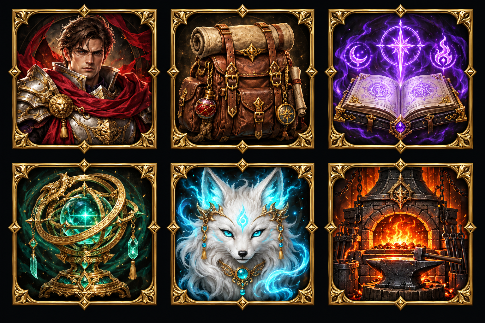
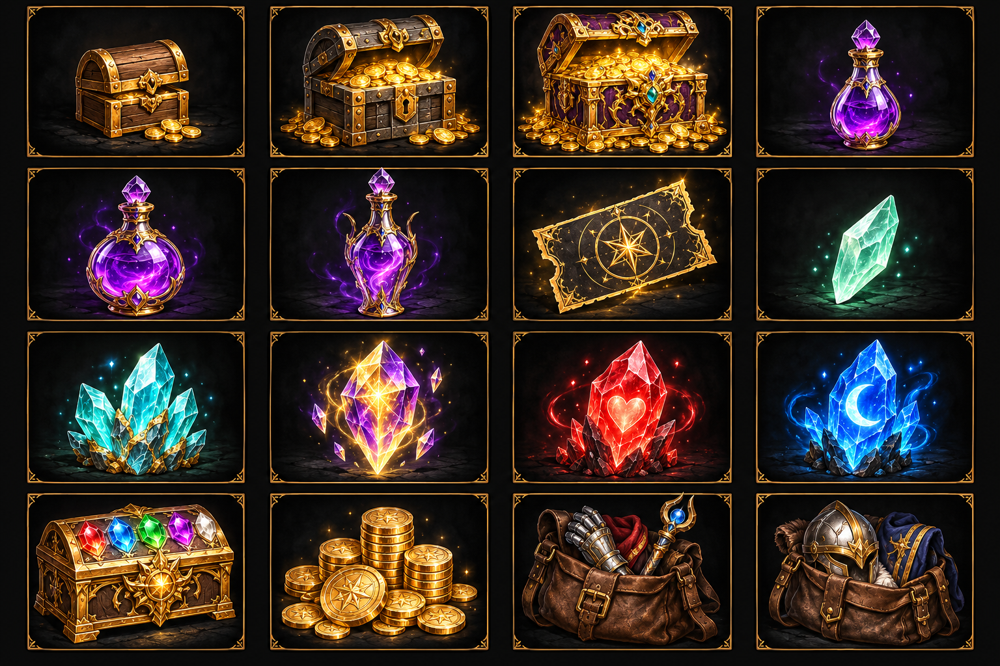
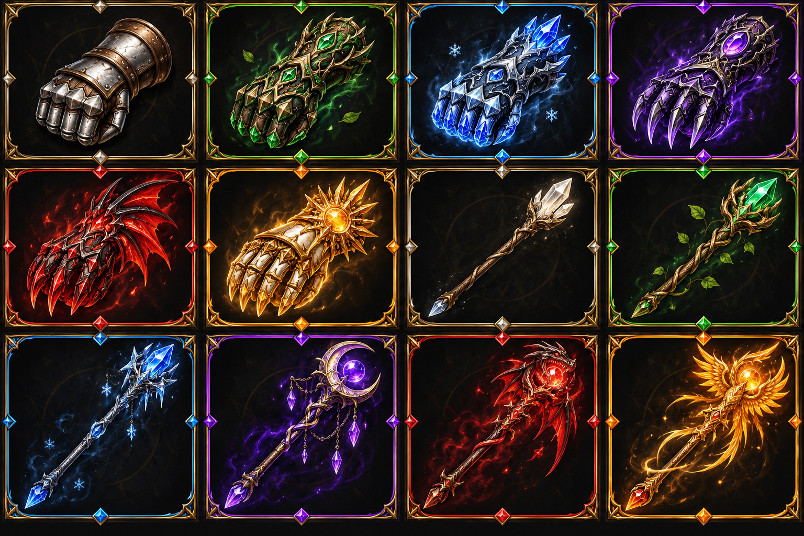
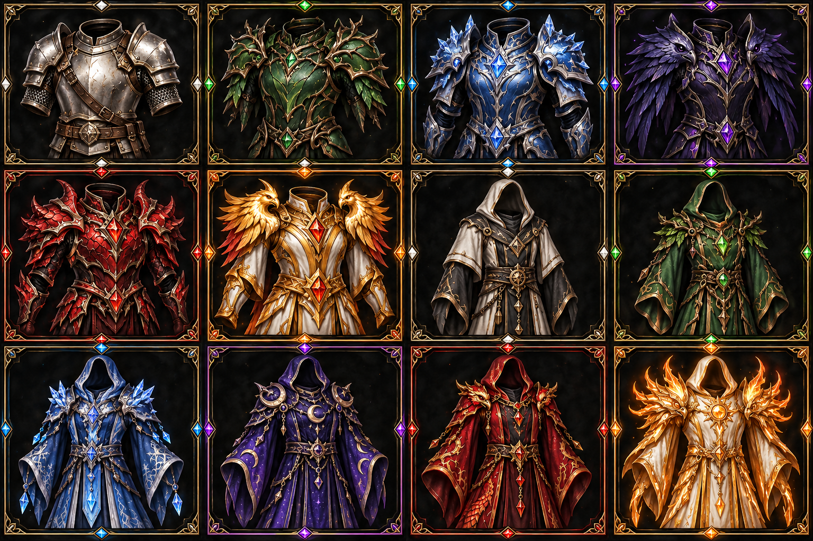
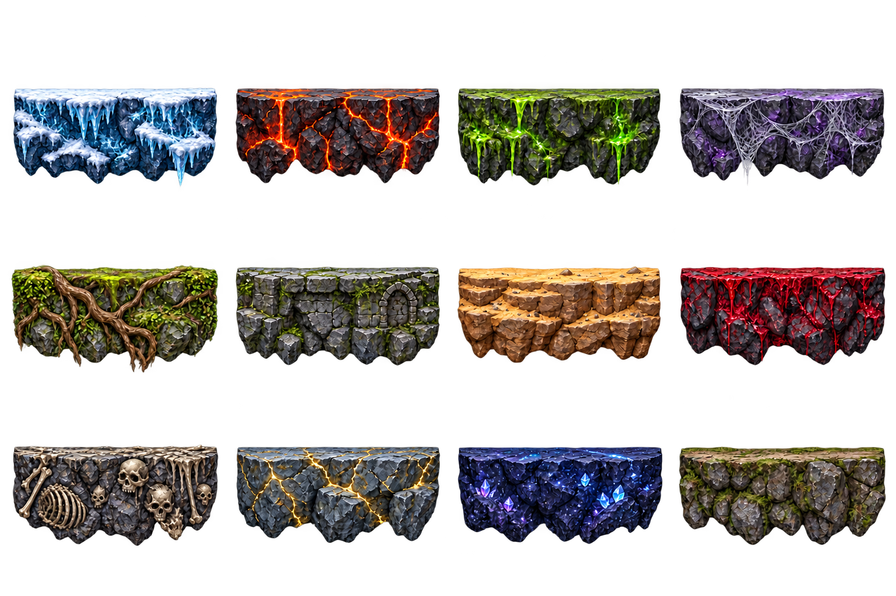

六大入口
3×2：角色、背包、技能、法器、灵宠、锻造炉。

ui-icons-v1.png · 1536×1024 · 原始像素保留道具与奖励
4×4：小/中/大金币箱，小/中/大经验瓶，抽奖券，小/中/高灵石，红回血晶，蓝回蓝晶，英雄自选箱，金币，武器袋，护甲袋。

items-v1.png · 1536×1024 · 原始像素保留六品质武器
4×3：前6拳套，后6法杖；每组白、绿、蓝、紫、红、橙。

equipment-v1.png · 1536×1024 · 原始像素保留六品质盔甲
4×3：前6近战甲，后6法袍；每组白、绿、蓝、紫、红、橙。

armors-v1.png · 1536×1024 · 原始像素保留12主题行走地面
4×3：冰、火、毒、蛛、树、石、沙、血月、骨、雷、星、通用。透明实心崖岩条。

ground-v1.png · 1536×1024 · 原始像素保留
边界与生成记录
图标读取每帧 rect；两个透明地形图集读取 spriteRect，并使用 topNormalized 与 standingX 对齐碰撞顶面。所有位置依据实际图集校准，避免假设等高裁剪。
运行边界 JSON · 完整提示词与默认源路径 · 尺寸、哈希与透明验证
预览软件可能显示透明像素内的隐藏 RGB 底色；实际空隙 alpha=0。地面曾进行一次针对透明的编辑，原稿保留用于追溯，不列为额外成品。